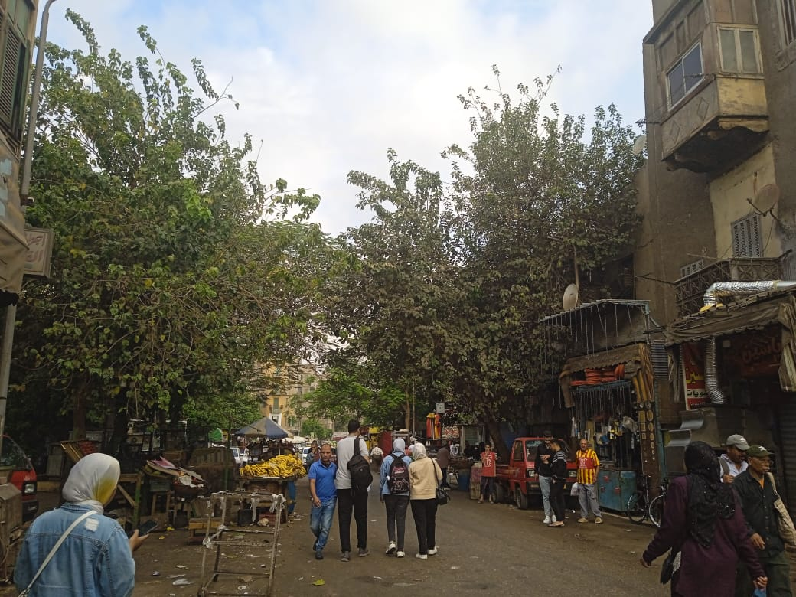

يمثل النقل أهمية كبيرة في كيان الحياة الحضرية بالمدن؛ وذلك لاعتماد نسبة كبيرة من السكان عليه بصورة منتظمة في تنقالتهم اليومية المختلفة، لذلك حظيت شبكات النقل وخاصة شبكات الطرق البرية في العديد من الدول باهتمام كبير من قبل المختصين في مختلف المجالات كالمخططين والأقتصاديين والمهندسين وكذلك الجغرافيين، ولهذا تعتبر شبكات الطرق ذات دور هام في ربط الأقاليم مع بعضها البعض من جهة وربط الأقاليم مع المناطق المحيطة بها من جهة اخرى .تعتبر منطقة حي السيدة عائشة من المناطق التي تعاني من ضعف في شبكة الطرق و بنيتها التحتية ونتج عن ذلك حدوث اختناقات مرورية في المنطقة ؛ بالأضافة الي مشكلة في معيار سهولة الوصول الذي يعد من أهم أهداف منظومة النقل عند تخطيطها و أصبحت رحلات التنقل اليومية تحتاج الي وقت وجهد كبير كل ذلك أدي الي وجود مشكلة مزمنة يعاني منها الحي.

يناقش هذا المشروع ازمة المرور في حي السيدة عائشة و اهميته تكمن في معرفة حالات الطرق وهل هي مهيئة للسيارات ام تحتاج الي تطوير لتجنب الحوادث المختلفة واعداد الحوادث علي الطرق و الخدمات المرورية علي الطرق مثل الردارات و الكمائن و رجال المرور و عمل تحديث علي كوبري السيدة عائشة .
1-إنشاء قاعدة بيانات جغرافية
2-الكشف عن جوانب الخلل المسببة في أزدحام المروري فى حي السيدة عائشة
3-تحسين الاستيعاب المروري في شبكة الطرق الحالية و المستقبلية ضمن منطقة الدراسة
4-وضع الخطط والمقترحات للمساهمة في التخلص من الازدحام المروري .
5-عمل توضيح تفصيلي لخدمات منطقة الدراسة (منطقة حي السيدة عائشة) . .
6-عمل ويب ابليكيشن لمنطقة حي السيدة عائشة . .
7-عمل ستوري ماب لمنطقة حي السيدة عائشة .
8-عمل داش بورد لمنطقة حي السيدة عائشة .
9-عمل مسارات تحديد الطرق لمنطقة حي السيدة عائشة . .